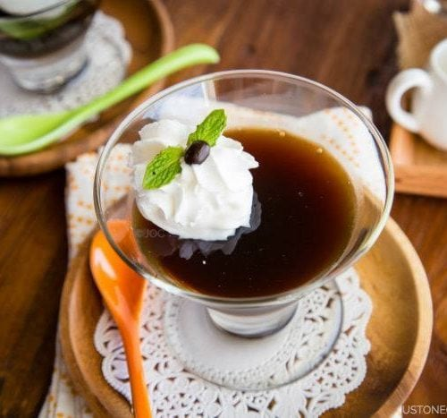

Coffe Jelly

"A refreshing Japanese summertime treat! My favorite way to serve it is with frozen whipped cream and chocolate sauce,
although it's also delicious with ice cream, regular whipped cream, or flavored coffee cream! It can be served solid in glasses, or cubed in bowls."
Per Serving:
43 calories; protein 1.6g; carbohydrates 9.4g; sodium 6mg.
Ingredients
- 1 (.25 ounce) package unflavored gelatin
- 2 tablespoons hot water
- 3 tablespoons white sugar
- 2 cups fresh brewed coffee
Steps
-
Dissolve gelatin in the hot water in a small bowl. Pour gelatin mixture, coffee, and sugar in a saucepan and bring to a boil over high heat.
Pour coffee mixture into glasses for individual servings or a large pan for cubing. Chill in the refrigerator until solidified, 6 to 7 hours.